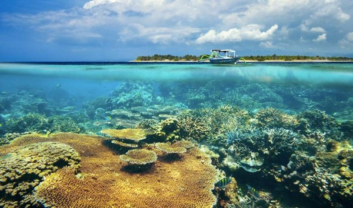
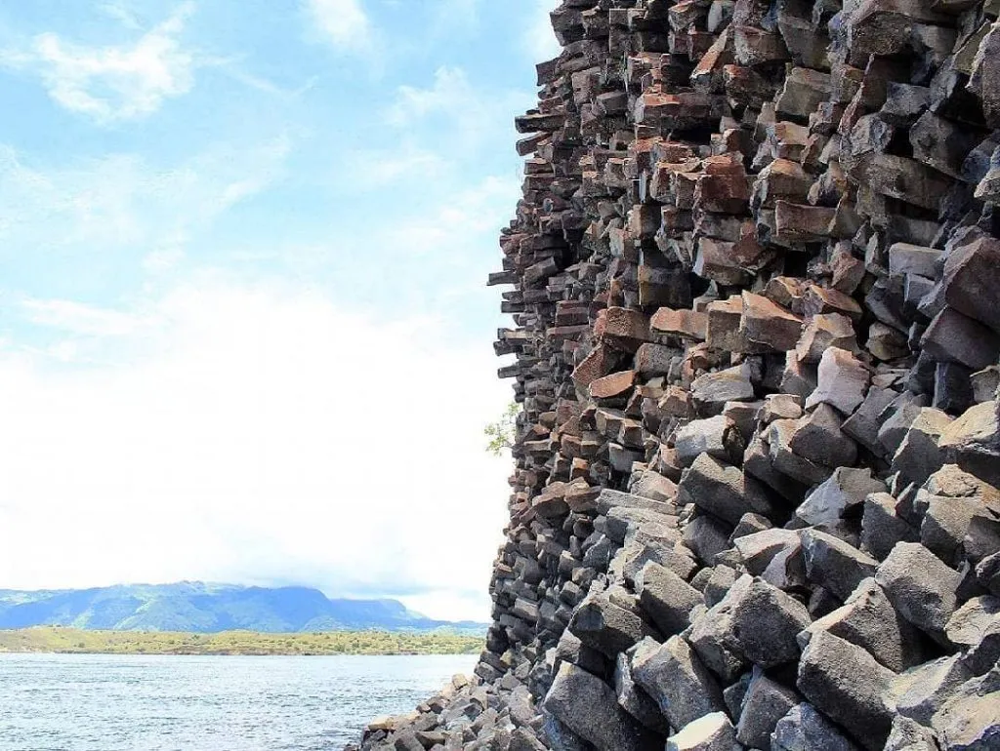
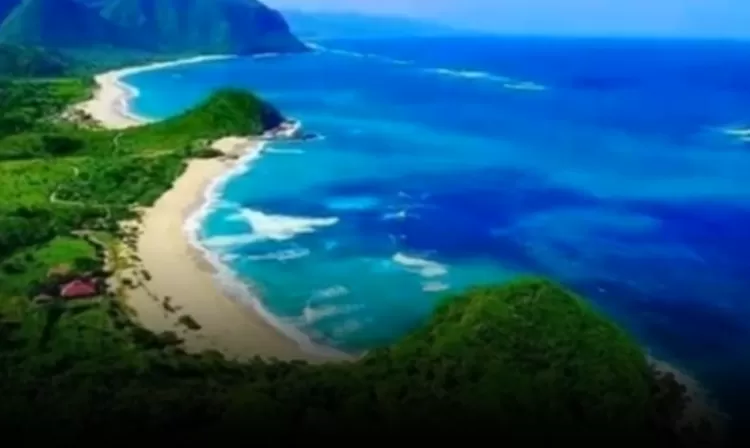

Masjid Terapung Bima adalah salah satu icon di Kota Bima yang berada dikawasan Pantai Amahami. Masjid ini juga diberi nama Masjid Amahami
Kota Bima inilah yang menyaksikan tumbuhnya seorang anak perempuan satu-satunya dari pasangan orang tua hebat.
Terima kasih telah melahirkanku dengan penuh kasih sayang dan di kota yang damai ini
Halo saya adalah Nur Rizki yang coba mengeksplor Dana Mbojo
Jika ingin berkunjung, Pulau Kelapa berada Selat Sape tepatnya di Desa Wisata Lambu, Kecamatan Lambu, Kabupaten Bima. Akses ke pulau seluas 559,24 hektare ini cukup mudah. Wisatawan dari luar kota, bisa lebih dulu menuju Bandara Sultan Muhammad Salahuddin di Kecamatan Palibelo, Kabupaten Bima.
Jika ingin berkujung, Pantai Nisa Pudu berada di Soro,Kec.Kempo, Kab.Dompu,Nusa Tenggara Barat
Jika ingin berkunjung, Pantai Pink ini terletak di Wilayah Desa Lambu,Kec.Lambu,Kab.Bima. Untuk menuju ke Pantai Pink ini dari Kota Bima, penghujung harus menempuh jarak sekitar 60km. Selain itu juga membutuhkan waktu sekitar 2 jam perjalanan kemudian dilanjutkan dengan naik perahu dari pelabuhan Saape atau dari Desa Lambu.
Pantai Tanjung Meriam Bima atau yang sering juga disebut dengan Toro Maria Bima menjadi pantai dengan destinasi wisata alamnya yang terbaik dan sangat direkomendasikan untuk berkunjung. Menyimpan keindahan alam dan sejarah yang luar biasa untuk di explore. Pantai yang begitu eksotis ini berada pada daerah yang cukup terpencil sehingga sangat menantang untuk dikunjungi. Namun lelah yang dirasa ketika berkunjung ke destinasi ini tentu saja akan terbayar dengan beberapa pesona daya tariknya yang mengagumkan.Pantai Tanjung Maria ini berada di Desa Nggelu,Kec.Lambu,Kab.Bima,Nusa Tenggara Barat
Jika ingin berkunjung, Pantai Wane terletak pada Desa Tolouwi,Kec.Monta,Kab.Bima,Nusa Tenggara Barat
Dana Mbojo adalah sebuah kota yang terletak di Pulau Sumbawa bagian Timur, provinsi Nusa Tenggara Barat,Indonesia:
Kalembo Ade
Terimakasih Sudah Berkunjung